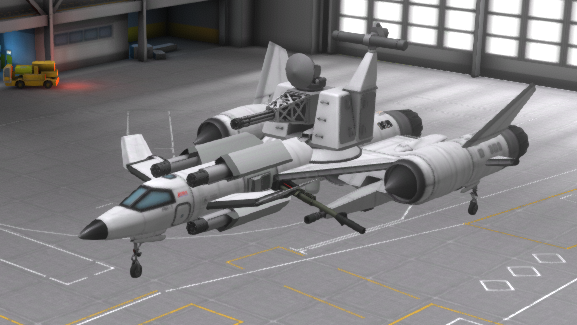
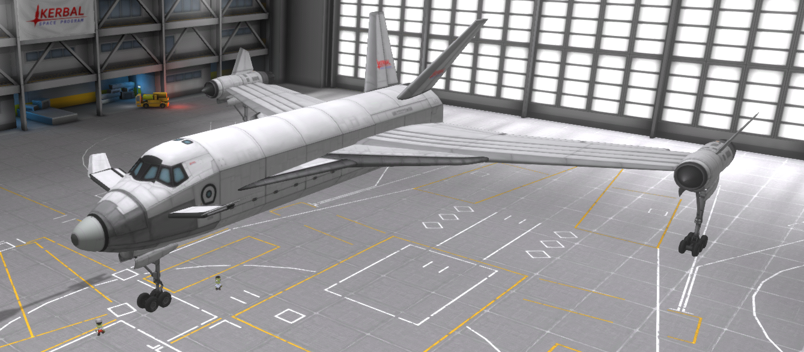
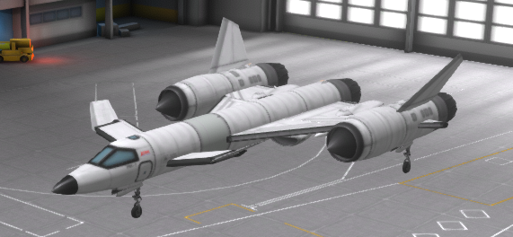
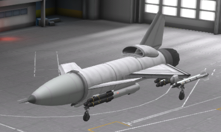
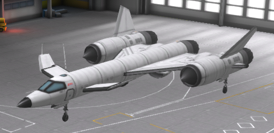

Here you can find all the airplanes of the "45" tree
The A-45:
The A-45 is an attack aircraft mainly used for CAS.
It comes standardly equiped with 2 pairs of MK82 snakeEye bombs, 2 pairs of S-8KOM rocket pods,
and two AMG-65 Maverick missiles, along with a GAU-8 Avenger Cannon
On its belly you'll find a FLIR Targeting Ball

The A-45 (gunship):
This heavily modified A-45 comes equiped with the firepower of a large navy ship, having 4x GAU-8's,
two radial M102 howitzers, a Goalkeeper CIWS, and two Oerlikon Millennium Cannons

B-45
The B-45 comes equiped with 3 adjustable rotary bomb racks, armed with MK82 bombs
It has a .50 cal turret on its tail, two on the outer engines and on on the underside of the nose.

F-45
The F-45 has 6 AIM-120 AMRAAM missiles and a vulcan near the nose.

Q-45
The Q-45 has 12 Hellfire missiles along with 2 AIM-9 sidewinder missiles.
it has its own dedicated Tageting pod on the belly

YF-45
The YF-45 is the prototype that started it all, can be used for any roll if equiped with the correct weapons.
Often used for airshows
